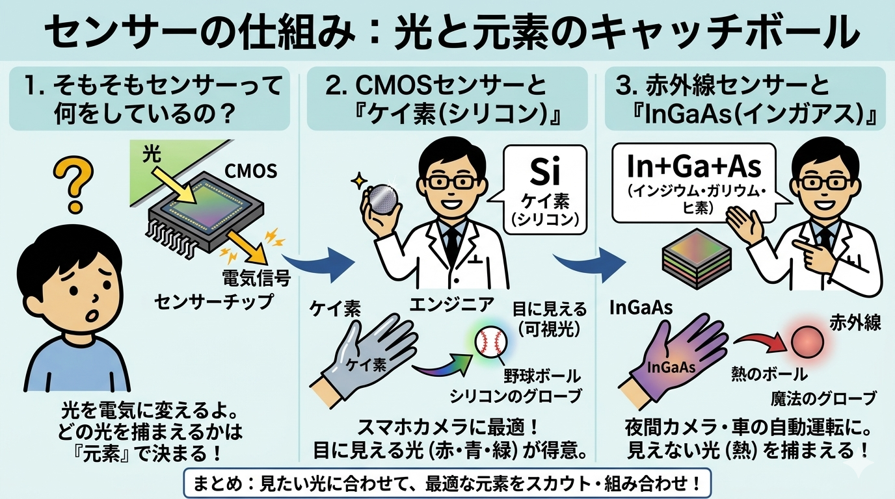

1. そもそもセンサーって何をしているの？
👧
アカリ（中学生）
サトウさん、スマホのカメラに使われている「CMOSセンサー」とか、暗闇でも見える「赤外線センサー」ってよく耳にするけど、そもそもどうやって光をキャッチしているんですか？
👨💻
サトウ（開発エンジニア）
いい質問だね！一言でいうとね、センサーの仕組みは「光と元素のキャッチボール」なんだ。カメラのセンサーの最大の役割は、「当たった光を、電気の信号に変えること」だよ。
👧
アカリ（中学生）
光を電気に変える……？そんなことができるの？
👨💻
サトウ（開発エンジニア）
そう。光がセンサーの味付け（元素）にぶつかると、電気がピョコッと飛び出す仕組み（光電効果）を使っているんだ。でも、光には「目に見える光（可視光）」と「目に見えない光（赤外線など）」があるよね。実は、「どの元素を使うか」によって、キャッチできる光の種類が変わるんだ。ここが一番のポイントだよ！
技術原理の解説（光電変換の基本）
イメージセンサーの根幹は、入射した光子（Photon）を電子（Electron）に変換する「光電効果」にあります。
固体物理学においては、半導体の価電子帯にある電子が光のエネルギーを吸収し、禁制帯（バンドギャップ）を飛び越えて伝導帯へと励起されることで電気信号が生まれます。このバンドギャップの大きさが、吸収できる光の波長（エネルギー）を決定します。

2. CMOSセンサーと『ケイ素（シリコン）』
👧
アカリ（中学生）
じゃあ、私たちがいつも使っているスマホのカメラは、どんな元素が光を捕まえているの？
👨💻
サトウ（開発エンジニア）
みんなのスマホに入っている「CMOSセンサー」の多くは、ケイ素（シリコン / $Si$）という元素でできているよ。地球の砂などにも大量に含まれている、すごく身近な元素んだ。
👧
アカリ（中学生）
シリコンって、あの半導体とかでよく聞くシリコン？
👨💻
サトウ（開発エンジニア）
そう！シリコンの得意技は、人間の目に見える光（赤、青、緑などの可視光）をキャッチすることなんだ。例えるなら、シリコンは「普通の野球ボール（目に見える光）を捕るのが大得意なグローブ」だね。シリコンくんが目に見える光をバッチリ捕まえてくれるから、スマホできれいな写真が撮れるんだよ。
技術原理の解説（シリコン半導体と可視光感度）
ケイ素（$Si$）のバンドギャップエネルギーは約$1.12\text{ eV}$であり、これは波長に換算すると約$1100\text{ nm}$以下の光（可視光線から近赤外線の一部）を効率よく吸収できる特性を持っています。
この物理的性質が、人間の視覚特性（約$400\text{ nm} \sim 700\text{ nm}$）をカバーするCMOSイメージセンサーの基盤材料としてシリコンが最適である理由です。
3. 赤外線センサーと『InGaAs（インガアス）』
👧
アカリ（中学生）
シリコンのグローブが優秀なら、暗闇で熱を見る「赤外線センサー」もシリコンで作ればいいんじゃないですか？
👨💻
サトウ（開発エンジニア）
そこが面白いところでね、赤外線は人間の目には見えない「エネルギーの低い熱の光」なんだ。実は、さっきのシリコンのグローブだと、赤外線はすり抜けてしまって捕まえられないんだよね。
👧
アカリ（中学生）
ええっ！すり抜けちゃうんだ。じゃあどうするの？
👨💻
サトウ（開発エンジニア）
そこで登場するのが、「InGaAs（インガアス）」という素材なんだ！これは1つの元素ではなく、3つの元素を混ぜ合わせて作ったスペシャルなチームなんだよ。
★InGaAsの魔法のグローブチーム：
・$In$（インジウム）： タッチパネルなどにも使われる金属。
・$Ga$（ガリウム）： 手のひらの体温で溶けちゃう不思議な金属。
・$As$（ヒ素）： 単体だと毒性があるけれど、合体するとすごいパワーを発揮する元素。
・$In$（インジウム）： タッチパネルなどにも使われる金属。
・$Ga$（ガリウム）： 手のひらの体温で溶けちゃう不思議な金属。
・$As$（ヒ素）： 単体だと毒性があるけれど、合体するとすごいパワーを発揮する元素。
👧
アカリ（中学生）
この3つが合体することで、「目に見えない熱のボール」を捕まえられる魔法のグローブになるんだ！夜間カメラや車の自動運転に使われる理由が分かりました！
技術原理の解説（化合物半導体による長波長化）
赤外線を検出するためには、シリコンよりも小さなバンドギャップを持つ材料が必要です。
インジウム・ガリウム・ヒ素（$\text{InGaAs}$）に代表されるIII-V族化合物半導体は、元素の混晶比（組成比）を調整することでバンドギャップを約$0.75\text{ eV}$付近（受光波長：約$1.7\ \mu\text{m}$まで）に最適化でき、シリコンでは透過してしまう赤外線光子を確実に捉えることが可能になります。
まとめ：見えたい光に合わせて、最適な元素をスカウト・組み合わせ！
👧
アカリ（中学生）
今日のお話を一言でまとめると、「見える光なら地球にたくさんあるシリコン、見えない赤外線ならインジウム・ガリウム・ヒ素のチーム技！」ってことですね。
👨💻
サトウ（開発エンジニア）
素晴らしいまとめだ、大正解！ハードウェアの進化は、ただ回路を細かくするだけじゃなくて、こうやって「光の物理的な性質に合わせて、最適な元素をナノレベルでコントロールする」という材料工学（マテリアルサイエンス）の力に支えられているんだよ。
総括：バンドギャップエンジニアリングの未来
最先端のイメージング技術は、デジタル信号処理（ISP）だけでなく、受光層における「バンドギャップエンジニアリング」と密接に結びついています。
用途に応じて最適な元素を選択・結晶成長させる固体物理学アプローチこそが、次世代の超高感度カメラや自動運転インフラ、宇宙観測を可能にする技術的ブレイクスルーの核心です。
日常の風景を切り取るシリコン（$Si$）イメージセンサーから、目に見えない光を数理・物理的に可視化する$\text{InGaAs}$などの化合物半導体技術。センサーの進化とは、光子というエネルギーの塊をいかに効率よく捉えるかという、元素の特性を極限まで引き出すエンジニアたちの知恵の結晶です。